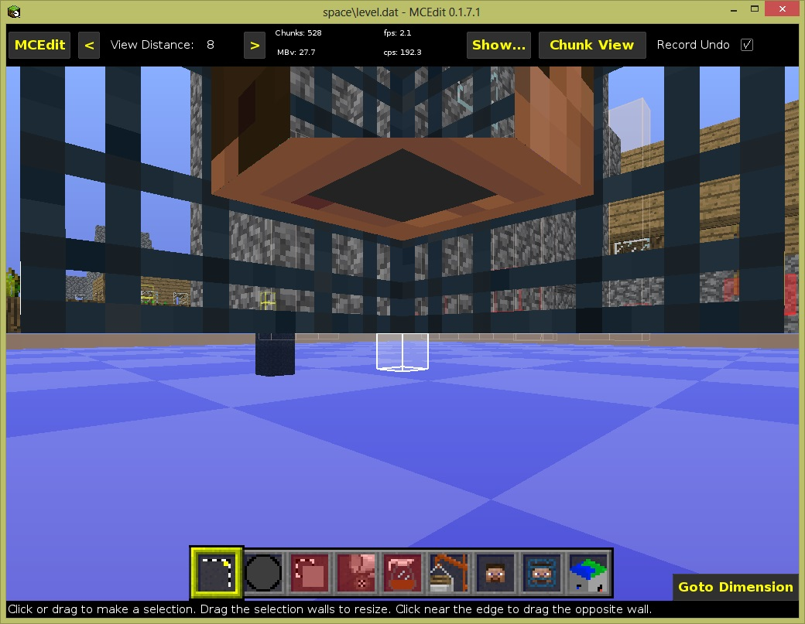
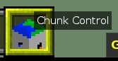
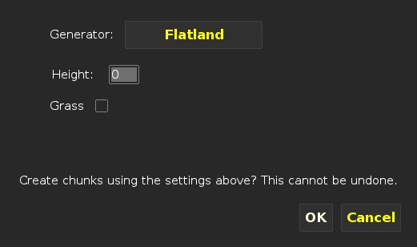
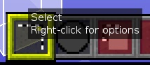
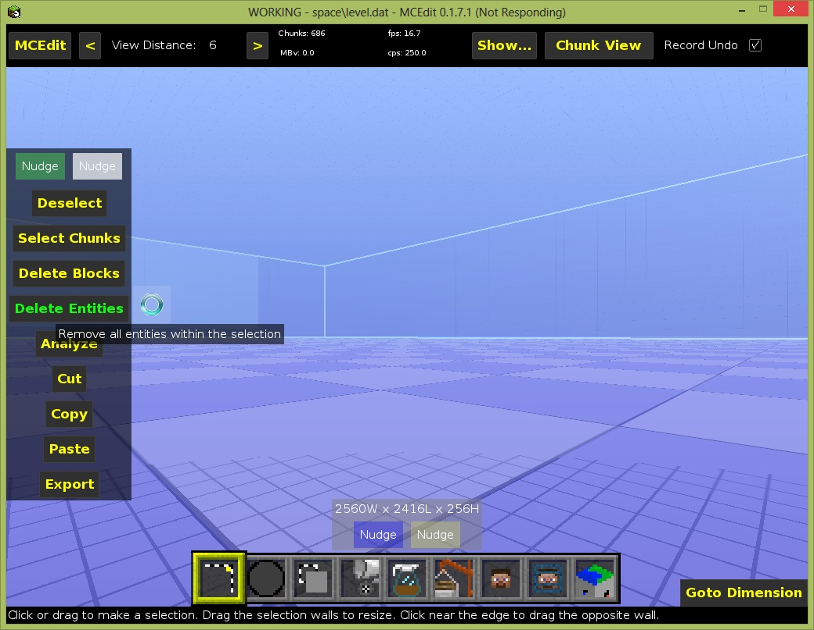

MCEdit is a sort of CAD like program for editing Minecraft worlds outside of Minecraft. It can be difficult to use, but it is also very powerful. We are only going to do some very basic things with it.
Download the latest version of MCEdit from the MCEdit web site, extract it to some place on your hard drive and launch it.
Select the "Open a level" option.
You will have to navigate to the folder where you have the craftbukkit server jar file and then go into space and select the "level.dat" file.
It should load your world and show a view of your new "space" world that may look rather odd.
Click on "Chunk View" to switch to an overhead view of the world. You can use the scroll wheel on your mouse to zoom out if you like. It isn't necessary though.
Press CTRL-a to select everything. The colors should change slightly to show things are highlighted.
Click on the far right box of in the row at the bottom labeled "Chunk Control":
Click "Don't Repop". This will take a minute or two and clear out some of the funny yellow boxes. You will just have to rely on the rotating hourglass or spinning wait icon to tell you when it is done working. Do not dispair if the window says "(Not Responding)" for a while, just be patient.
Now click on Delete and answer "Yes". This time you will get a nice progress bar.
Next click on "Create", change "Generator" to "Flatland", set Height to 0 and Uncheck "Grass". Click on OK.
Click on Deselect.
Now click on the far left box in the bottom row:
Press CTRL-a to select everything. The colors should change slightly to show things are highlighted.
Click on "Delete Entities" in the menu box on the left. This will give you spinning "busy" icon and a "(Not Responding)" title again. Just be patient, it will finish eventually.
Press CTRL-s to save the changes to your world. This will take a little while to finish.
Click on the MCEdit button at the top and click on "Quit" to exit MCEdit.
That is all!
Next we are ready to boldly enter the New Frontier ->
{kind=link}
{kind=link}
{kind=link}